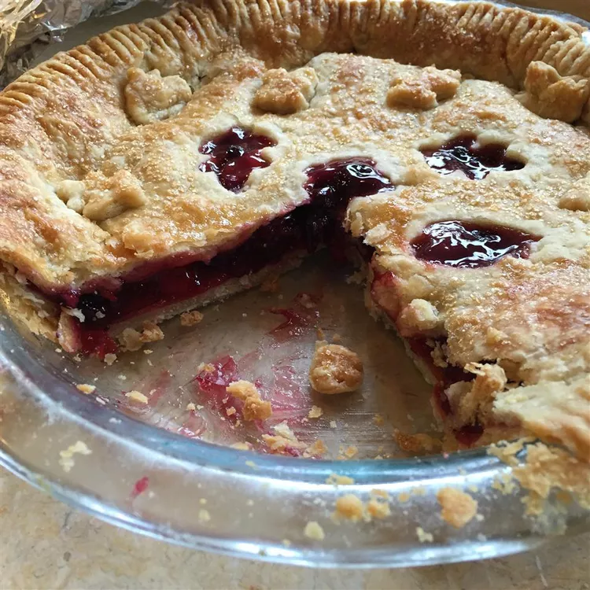

Cherry Blueberry Pie

Description
Cherry and blueberry pie is a fruity and fun surprise that goes beyond the usual
dessert in this double-crusted treat.
Ingredients
- 1 (15 ounce) package refrigerated pie crusts
- 1/2 cup white sugar
- 2 tablespoons cornstarch
- 1/4 teaspoon ground cinnamon
- 1 (21 ounce) can cherry pie filling
- 1 & 1/2 cups frozen blueberries
- 1 egg white
- 1 teaspoon water
- 2 teaspoons sugar
Steps
- Preheat the oven to 425 degrees F (220 degrees C).
- Press one of the pie crusts into a 9-inch pie plate. Stir together 1/2 cup sugar,
cornstarch, and cinnamon in a large bowl. Stir in cherry pie filling and
blueberries. Spoon into pie crust. Top with second crust and press the edges
to seal. Flute edges or press with the tines of a fork. Whisk together egg white
and water in a cup with a fork. Brush over the top of the pie, then sprinkle with
2 teaspoons sugar.
- Bake in the preheated oven until crust is golden brown, 45 to 55 minutes. Cover the
edges of the crust with aluminum foil if they appear to be getting too dark. Cool
for at least 2 hours to allow the filling to set before serving.